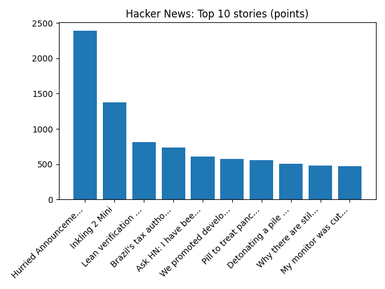

FBI reportedly investigating apparent hack of its criminal database
BBC — World
YOUR DAILY INTELLIGENCE BRIEF · 2026-11-22
Global watch: FBI reportedly investigating apparent hack of its criminal database, Paolo Bulgari, who turned a family jewelry business into a global brand, dies at 89.
Northern Virginia: Remains of missing Rockville man possibly found in Northern Virginia - FOX 5 DC, Northern Virginia Turkey Trots: A Few Miles Before The Mashed Potatoes - Patch.

Global coverage includes FBI reportedly investigating apparent hack of its criminal database; Paolo Bulgari, who turned a family jewelry business into a global brand, dies at 89; Mexican drug lord on FBI's 10 most wanted list arrested in shoot-out. Local coverage includes Remains of missing Rockville man possibly found in Northern Virginia - FOX 5 DC; Northern Virginia Turkey Trots: A Few Miles Before The Mashed Potatoes - Patch.

Spartakiad
Five international Spartakiades were held from 1928 to 1937. The games were organised by Red Sport International.
https://en.wikipedia.org/wiki/Spartakiad
Runs so far today: 1